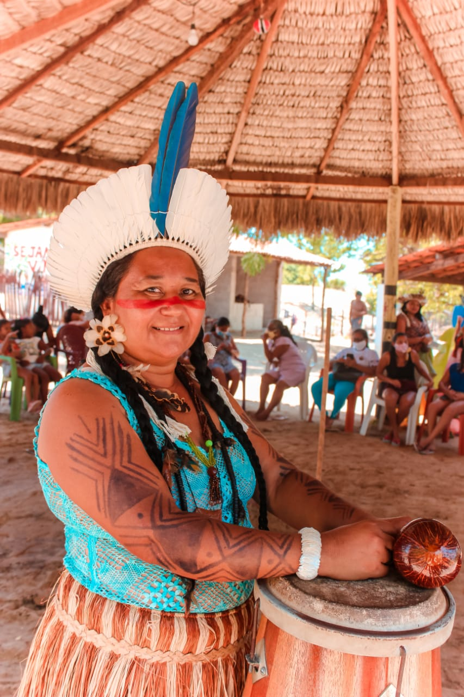

A Associação de Defesa Etnoambiental Kanindé é uma organização não governamental brasileira dedicada à proteção dos povos indígenas e ao meio ambiente na Amazônia. Fundada em 1992 em Rondônia, uma ONG nasceu com o desejo de defender os direitos dos povos indígenas, especialmente aqueles que vivem nas florestas tropicais ameaçadas pela exploração ilegal de recursos naturais. Desde então, a Kanindé tem trabalhado para garantir a proteção das terras indígenas, promover o desenvolvimento sustentável e apoiar a preservação das culturas e tradições indígenas. O trabalho de Kanindé é marcado pela abordagem etnoambiental, que reforça a importância de proteger a biodiversidade e, ao mesmo tempo, preservar os direitos e saberes das populações indígenas que habitam essas regiões. A ONG atua junto a diversas comunidades indígenas de Rondônia, como os povos Uru-Eu-Wau-Wau, Gavião, Karipuna, entre outros, oferecendo suporte técnico, jurídico e educacional para que possam defender suas terras e fortalecer sua identidade cultural. As principais frentes de atuação de Kanindé incluem: 1. Proteção Territorial e Ambiental A Kanindé realiza ações de vigilância e monitoramento para proteger as terras indígenas contra invasões, desmatamento, mineração ilegal e outras atividades predatórias. A ONG utiliza tecnologias como sistemas de monitoramento por satélite e drones, além de promover a capacitação das próprias comunidades para que possam proteger suas terras de maneira mais autônoma. 2.